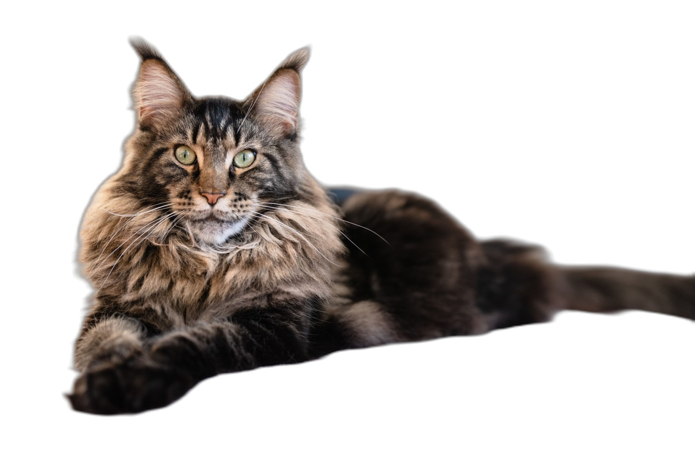
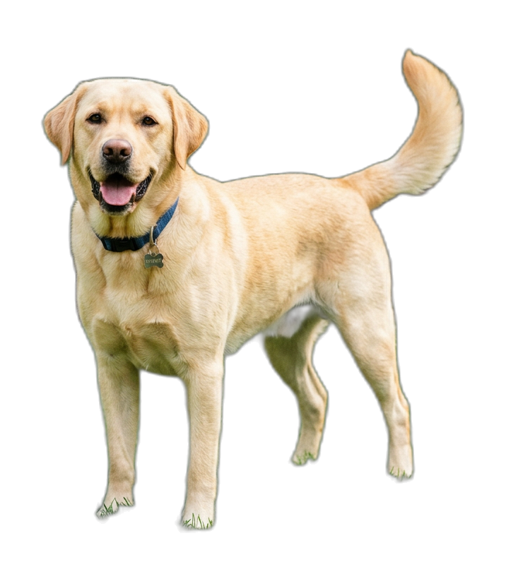
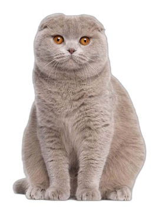
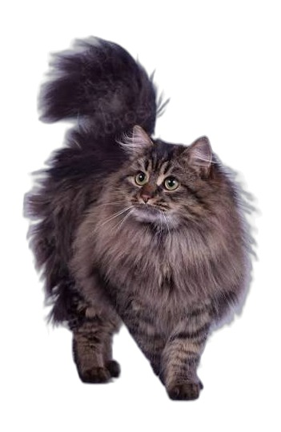
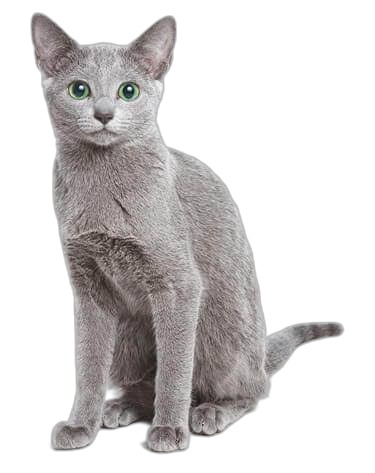
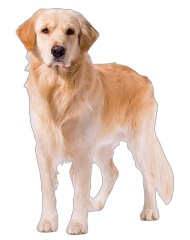

Считает норму
Рассчитывает ориентировочную суточную энергетическую потребность и рекомендуемую суточную порцию в граммах.
Корм по норме твоего питомца
НормаЛап помогает владельцам кошек и собак быстрее подбирать корм с учётом характеристик питомца, изучать информацию о кормах и отслеживать повседневный уход.


Владельцам кошек и собак сложно и долго самостоятельно выбирать корм: нужно учитывать характеристики питомца, сравнивать составы и разбираться в информации на упаковке.
Не у всех владельцев есть время и знания, чтобы уверенно оценить варианты. Индивидуальная консультация ветеринарного специалиста может быть затратной, а повседневные вопросы о кормлении возникают регулярно.
Порода, вес, возраст, стерилизация, активность и здоровье — всё это влияет на выбор.
Десятки пачек на полке и длинные списки ингредиентов, в которых трудно разобраться.
Рекламные обещания и мелкий шрифт не отвечают на вопрос «подойдёт ли это именно моему питомцу».
НормаЛап упрощает первичный поиск информации: объединяет сведения о питомце и базе кормов, показывает подходящие варианты и объясняет рекомендации. Приложение не заменяет ветеринарную диагностику и назначение лечебного питания.
НормаЛап — приложение для владельцев кошек и собак, которое сопоставляет характеристики питомца с данными о готовых кормах, рассчитывает ориентировочную суточную норму кормления и объясняет рекомендации.
НормаЛап помогает владельцам кошек и собак выбирать готовые корма российского рынка: приложение сопоставляет данные питомца с базой кормов, рассчитывает ориентировочную суточную норму и объясняет рекомендации — без необходимости самостоятельно сравнивать множество источников; основные функции доступны офлайн.
Рассчитывает ориентировочную суточную энергетическую потребность и рекомендуемую суточную порцию в граммах.
Показывает информацию о кормах и объясняет, почему определённые варианты могут подойти питомцу.
Позволяет изучать породы кошек и собак и читать их описания.
Помогает вести записи о весе и использовать дополнительные инструменты для повседневного ухода.
Приложение доступно на разных устройствах и работает без подключения к интернету.
Владельцы кошек и собак, которым сложно самостоятельно сравнивать готовые корма.
Пользователи, у которых мало времени на изучение составов и характеристик кормов.
Владельцы, которые хотят ориентироваться в кормлении и удобнее отслеживать данные о питомце.
«Выбирать корм бывает сложно. Важно учитывать не только упаковку и рекламу, но и потребности питомца».
«Сопоставляем характеристики питомца с информацией о кормах и объясняем рекомендации».
Экран с информацией: пользователь узнаёт, откуда берутся данные о кормах и как используется информация.
Пользователь выбирает бесплатную версию или подписку Pro. Функции платной подписки прописаны в приложении.
Создаёт профиль питомца, затем получает рекомендации и использует доступные функции приложения.
Несколько простых полей — и приложение понимает, что подходит именно вашему питомцу.

Оплата подписки в приложении пока не подключена.
Спокойные цвета, крупные цифры и понятные подсказки. Ниже — примеры экранов; цифры в них иллюстративные.
Суточная энергетическая потребность, белки, жиры и углеводы — и порции в граммах на утро, день и вечер. Рекомендации сопровождаются объяснениями.
26 пород кошек и 24 породы собак. Если не знаете породу питомца — посмотрите список и описания, а затем выберите подходящую при создании профиля.
Запись веса питомца каждый день доступна в бесплатной версии. Видно динамику и расстояние до целевого веса.
Угадайте слово из пяти букв за шесть попыток. Зелёная клетка — буква на месте, медовая — есть, но в другом месте, серая — такой буквы нет.


Тот же принцип, что и в приложении: базовый обмен веществ по весу и коэффициент под возраст, стерилизацию и активность. Это ориентир, а не назначение — при диагнозах и особенностях здоровья обязательно проконсультируйтесь с ветеринаром.

Приложение подставляет калорийность реального корма из базы и учитывает диагнозы.
Приложение использует данные профиля питомца и базу информации о готовых кормах, чтобы сопоставлять характеристики животного с доступными вариантами. Результат помогает пользователю сравнивать корма и понимать логику рекомендаций.
В приложении предусмотрена кнопка прозрачности с информацией об источниках данных. Приложение доступно на разных устройствах и рассчитано на работу без интернета.
Персонализированный подбор корма с расчётом КБЖУ на основе характеристик конкретного питомца.
Рекомендации сопровождаются объяснениями, а не только перечнем вариантов.
Подбор корма и расчёт ориентировочной порции объединены с инструментами повседневного ухода.
Информация о породах, кормах и профиле питомца собрана в одном приложении.
Билеты за участие в игре «5 букв», розыгрыши, виртуальный питомец и интерактивные элементы.
Быстрый просмотр информации и сопоставление продукта с критериями питомца.
Сотрудничество с производителями кормов.
Учёт бюджета при подборе кормов.
Поиск кормов рядом с домом.
Баллы, серии активности и другие механики вовлечения для пользователей Pro.
Дополнительные консультации с ветеринарными специалистами.
Бесплатная версия. Данные хранятся на вашем устройстве.
Как поставить на iPhone. Файл не подписан Apple, поэтому напрямую с телефона он не откроется. Скачайте .ipa на компьютер, установите бесплатную программу Sideloadly (sideloadly.io) или AltStore, подключите iPhone кабелем, перетащите файл в программу и войдите своим Apple ID. Приложение появится на экране; при бесплатном Apple ID его нужно переустанавливать раз в 7 дней. Для постоянной установки и App Store нужна платная учётная запись Apple Developer.